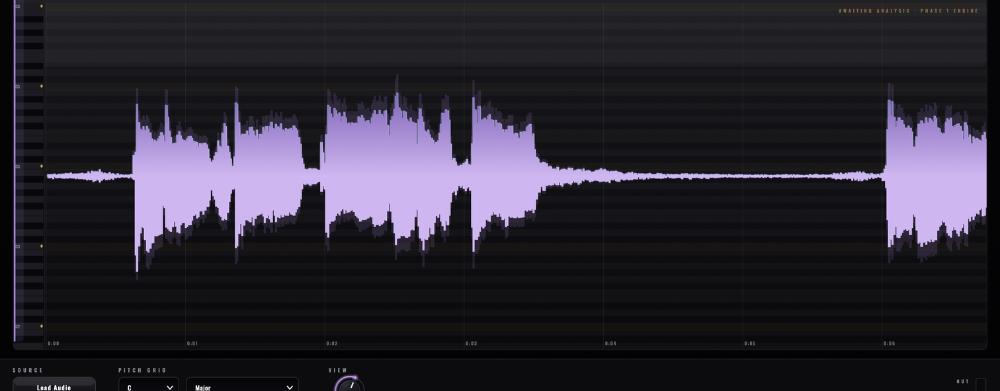

macOS
MACOS 11+ · INTEL & APPLE SILICON
Download installerOne installer · App + AU + VST3
REMI DSP · NOTE-BASED VOCAL EDITOR · EARLY ACCESS
Contour puts a recorded vocal on a piano roll — every note a blob you can hold. Pitch centre, drift and vibrato, formants and timing, each on its own handle, rendered back through the DAW over ARA2. In early access now: the stage, the scale grid and the ARA foundation — the note engine is in active development, and every update is free.
FREE DOWNLOAD · EARLY ACCESS · NO ACCOUNT REQUIRED

REMI DSP · CONTOUR STAGE — 44.1–96 kHz
A vocal isn't a waveform — it's notes. Contour's engine is being built to hear it that way: pYIN pitch tracking splits a take into note blobs, and each blob separates its centre, its slow drift and its vibrato so you can correct one without flattening the others. The natural micro-jitter of a real voice is left untouched — that's the part naive tuners destroy.

THE STAGE
The stage is already here: your take drawn as a living ribbon across piano-roll lanes, with the root marked in gold and the chosen scale lit under the voice. Pick a key, pick a mode, zoom to a syllable. When the note engine lands, blobs appear on these same lanes — grab one and move it.
Piano-roll lanes with a scale-aware grid, keyboard gutter and the take drawn as a violet ribbon. Loads files in the standalone, reads the track over ARA in a DAW.
Full ARA2 document lifecycle: model graph, archiving and sample-accurate playback rendering, validated against the ARA SDK test host and pluginval at maximum strictness.
pYIN pitch tracking with Viterbi decoding segments the take into note blobs with full pitch curves — the reference algorithm for monophonic voice.
Per-note centre, drift and vibrato on separate handles, chromatic or scale snap, adjustable transitions — with formants preserved or shifted on their own axis.
Split, glue, and drag note boundaries with Melodyne-style neighbour stretch. Plosives move as atomic slices; sibilants are never pitch-shifted.
TD-PSOLA on voiced material, WSOLA on breath and sibilance, phase-locked vocoder fallback — an engine routed by what the voice is doing at every instant.
Install, drop a vocal on the stage, and watch the take light up. Early access — the note engine arrives as free updates. No account required.
MACOS 11+ · INTEL & APPLE SILICON
Download installerOne installer · App + AU + VST3
V0.1 EARLY ACCESS · FREE UPDATES